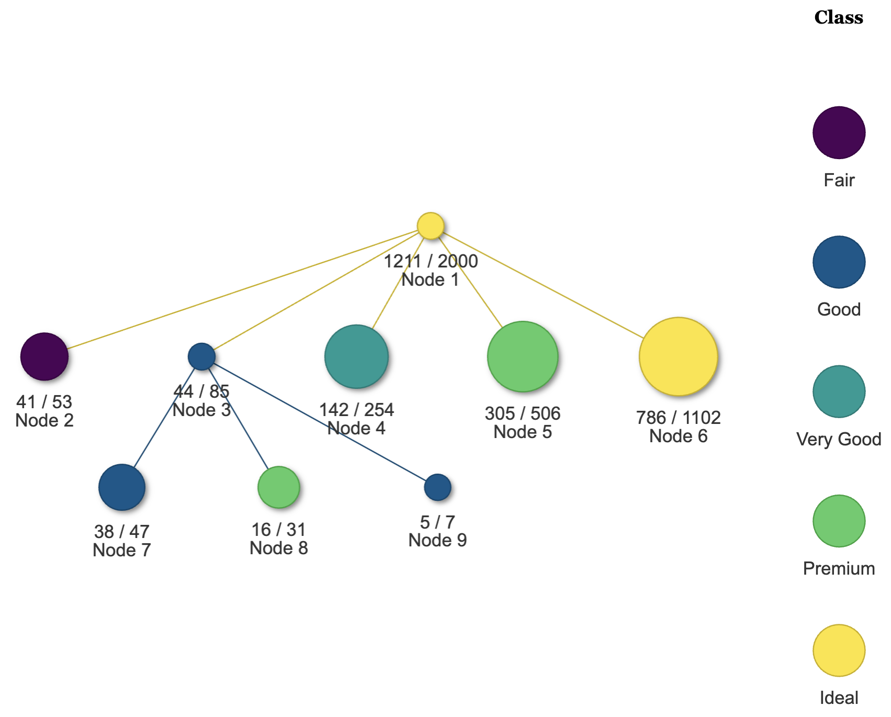
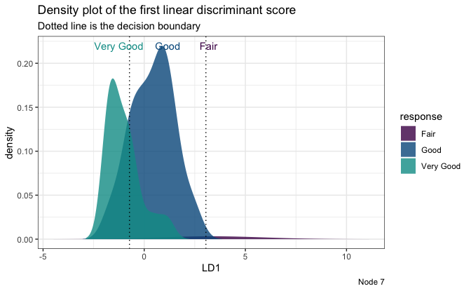

LDATree is an R modeling package for fitting
classification trees with oblique splits.
If you are unfamiliar with classification trees, here is a tutorial about the traditional CART and its R implementation
rpart.More details about the LDATree can be found in Wang, S. (2024). FoLDTree: A ULDA-Based Decision Tree Framework for Efficient Oblique Splits and Feature Selection. arXiv preprint arXiv:2410.23147. Link.
Why use the LDATree package?
Compared to other similar trees, LDATree distinguishes
itself in the following ways:
Using Uncorrelated Linear Discriminant Analysis (ULDA) from the
foldapackage, it can efficiently find oblique splits.It provides both ULDA and forward ULDA as the splitting rule and node model. Forward ULDA has intrinsic variable selection, which helps mitigate the influence of noise variables.
It automatically handles missing values.
It can output both predicted class and class probability.
It supports downsampling, which can be used to balance classes or accelerate the model fitting process.
It includes several visualization tools to provide deeper insights into the data.
Basic Usage of LDATree
We offer two main tree types in the LDATree package:
LDATree and FoLDTree. For the splitting rule and node model, LDATree
uses ULDA, while FoLDTree uses forward ULDA.
To build an LDATree (or FoLDTree):
library(LDATree)
set.seed(443)
diamonds <- as.data.frame(ggplot2::diamonds)[sample(53940, 2000),]
datX <- diamonds[, -2]
response <- diamonds[, 2] # we try to predict "cut"
fit <- Treee(datX = datX, response = response, verbose = FALSE) # by default, it is a pre-stopping FoLDTree
# fit <- Treee(datX = datX, response = response, verbose = FALSE, ldaType = "all", pruneMethod = "post") # if you want to fit a post-pruned LDATree.To plot the LDATree (or FoLDTree):
# View the overall tree.
plot(fit)
# Three types of individual plots
# 1. Scatter plot on first two LD scores
plot(fit, datX = datX, response = response, node = 1)
# 2. Density plot on the first LD score
plot(fit, datX = datX, response = response, node = 7)
# 3. A message
plot(fit, datX = datX, response = response, node = 2)
#> [1] "Every observation in node 2 is predicted to be Fair"To make predictions:
# Prediction only.
predictions <- predict(fit, datX)
head(predictions)
#> [1] "Ideal" "Ideal" "Ideal" "Ideal" "Ideal" "Ideal"
# A more informative prediction
predictions <- predict(fit, datX, type = "all")
head(predictions)
#> response node Fair Good Very Good Premium Ideal
#> 1 Ideal 6 4.362048e-03 0.062196349 0.2601145 0.056664046 0.6166630
#> 2 Ideal 6 1.082022e-04 0.006308281 0.1290079 0.079961227 0.7846144
#> 3 Ideal 6 7.226446e-03 0.077434549 0.2036148 0.023888946 0.6878352
#> 4 Ideal 6 1.695119e-02 0.115233616 0.1551836 0.008302145 0.7043295
#> 5 Ideal 6 4.923729e-05 0.004157352 0.1498265 0.187391975 0.6585749
#> 6 Ideal 6 4.827312e-03 0.061274797 0.1978061 0.027410359 0.7086815Additional Features
Missing values: The solution to the missing value problem is inherited from the
foldapackage. Check here for more details.Downsampling: Optional downsampling occurs only when fitting the ULDA model. Check here for more details.
misClassCost: This parameter is useful in situations where misclassifying certain classes has a more severe impact than others. Check here for more details.
References
Wang, S. (2024). A new forward discriminant analysis framework based on Pillai’s trace and ULDA. arXiv preprint, arXiv:2409.03136. Retrieved from https://arxiv.org/abs/2409.03136.
Wang, S. (2024). FoLDTree: A ULDA-based decision tree framework for efficient oblique splits and feature selection. arXiv preprint, arXiv:2410.23147. Retrieved from https://arxiv.org/abs/2410.23147.